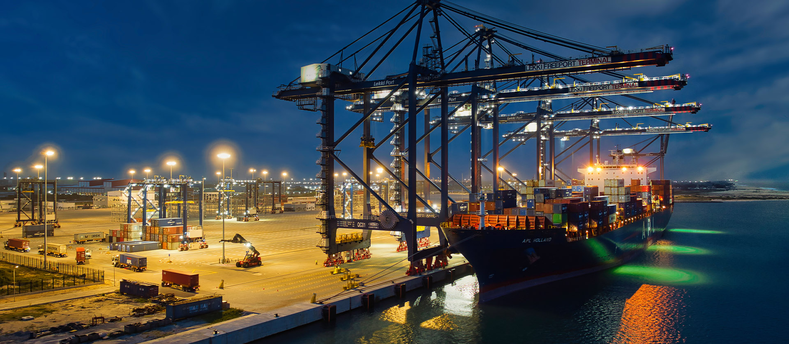

The Pier Review
The Pier Review
When we think of engineering marvels, our minds drift to the biggest, flashiest objects. For example, the Burj Khalifa, the Golden Gate Bridge or even the International Space Station. But tucked away at the edges of the continents are the most complex, influential feats of engineering in human history: the modern deep-water ports.
Ports are not just parking for boats; they are the heart of our economies, serving as primary hubs of global trade.
Geotechnical challenges
Building on land is much easier than on the sea. On the ocean, engineers have to contend with constant wave action and tidal shifts that can erode foundations in months. Additionally, soil liquefaction proves another challenge as most ports are built on reclaimed land made of soft silt. Hence, requiring massive ‘piling’ (driving steel tubes into bedrock) to support the weight of millions of tons of cargo. Furthermore, saltwater acts as a chemical chainsaw. Developing concrete and steel alloys that can survive decades of submersion is a feat of materials science.
The Logistics of the "Just-in-Time" Ghost
Modern port operations represent a sophisticated, high-pressure equilibrium that functions as a continuous, 24-hour industrial machine. The scale of modern maritime transit is often difficult to conceptualise until one observes a mega-vessel, such as the HMM Algeciras, entering a berth. These ships, stretching longer than the Eiffel Tower is tall, possess the capacity to carry over 24,000 twenty-foot equivalent units (TEUs). This creates an immense "peak volume" challenge for shore-side infrastructure. To put this in perspective, unloading such a vessel is akin to attempting to evacuate a capacity-filled sports stadium through a single set of revolving doors within an hour; it is a relentless logistical gauntlet for every crane operator and terminal manager on shift.
The coordination required to manage this throughput makes standard air traffic control appear relatively straightforward. It is a precise, high-stakes choreography involving Ship-to-Shore (STS) cranes, automated guided vehicles (AGVs), and massive straddle carriers. A minor software glitch or a single mechanical failure in a primary crane can trigger a multi-million dollar bottleneck that ripples across the global supply chain. It is, in many ways, a fragile miracle that these systems have not yet buckled under the weight of the "just-in-time" delivery model that current global consumerism demands.
The Silent War Against Corrosion
While the "chemical chainsaw" effect of saltwater is a constant threat, the materials science required to maintain these structures is increasingly complex. One cannot simply utilise standard reinforcement; if traditional steel rebar is used, chloride ions eventually penetrate the porous concrete, causing the metal to oxidise. This leads to what engineers colloquially term "concrete cancer," where the expanding rust creates internal pressure that physically fractures the structure from within.
Consequently, port engineers must employ a permanent strategy of active defence. This often involves cathodic protection, a process where "sacrificial anodes" made of zinc or aluminium are attached to the structure. These anodes corrode in place of the critical steel supports: essentially a calculated trade-off to preserve the dock’s integrity. Furthermore, modern concrete formulations are often enriched with fly ash or silica fume to minimise permeability. Such measures are non-negotiable when the infrastructure must support STS cranes weighing upwards of 2,000 tons, leaving zero margin for structural degradation.
Automation and the Digital Nervous System
Observing a premier terminal in Rotterdam or Singapore today reveals a striking, almost clinical silence. In these advanced hubs, the human element has largely migrated from the physical machinery to remote, climate-controlled operations centres. Joysticks and high-definition telemetry have superseded the traditional, grit-heavy environment of the docks. This shift toward total automation is not merely a matter of reducing operational expenditures; it is fundamentally about achieving absolute predictability.
Human operators, regardless of skill, are subject to fatigue and variances in spatial perception. Conversely, a computer-guided AGV or an automated stacking crane maintains a precision tolerance of mere centimetres, operating with identical efficiency regardless of the hour or weather conditions. This evolution is leading toward the "Dark Port" concept, where terminal operations could theoretically proceed without traditional lighting, driven entirely by data and sensor arrays. However, this transition does present a dichotomy; while efficiency reaches unprecedented levels, the historical, labour-intensive culture that once defined the maritime industry is rapidly being coded out of existence.
The Environmental Tightrope
Despite these technological leaps, the maritime sector faces a significant reckoning regarding its environmental footprint. Ports are historically centres of high localised pollution due to idling diesel engines, seabed dredging, and the inherent risks of hazardous material transit. Nevertheless, a transition is underway. There is a growing implementation of "cold ironing" or shore power, allowing vessels to connect to the local electrical grid and shut down their auxiliary engines while at berth.
Furthermore, some jurisdictions are exploring innovative mitigation strategies, such as bubble curtains, to shield marine life from the acoustic impact of underwater pile driving. These efforts represent a complex contradiction: the peak of industrial power attempting to harmonise with the volatile natural environment it seeks to utilise. The future of the deep-water port lies in this delicate balance between being an engine of global prosperity and a sustainable steward of the coastline.
Technical References & Further Reading
- Gaythwaite, J. W. (2016). Design of Marine Facilities: Engineering for Ships and Shipping. American Society of Civil Engineers (ASCE).
- PIANC (The World Association for Waterborne Transport Infrastructure). (2014). Design Principles for Container Terminals. MarCom Working Group Report No. 135.
- Broomfield, J. P. (2006). Corrosion of Steel in Concrete: Understanding, Investigation and Repair. Taylor & Francis.
- Steenken, C., Voß, S., & Stahlbock, R. (2004). "Container terminal operation and operations research - a classification and literature review." OR Spectrum.